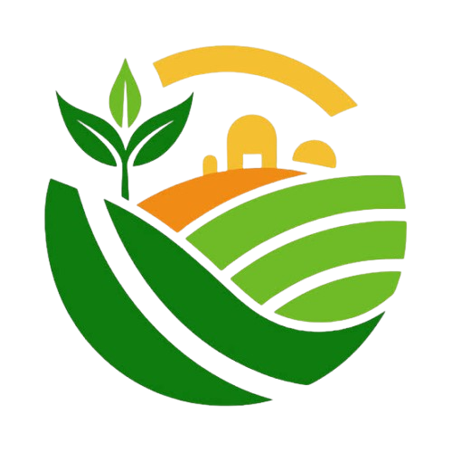
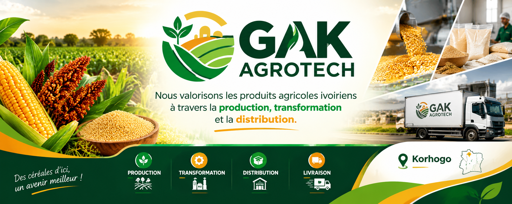
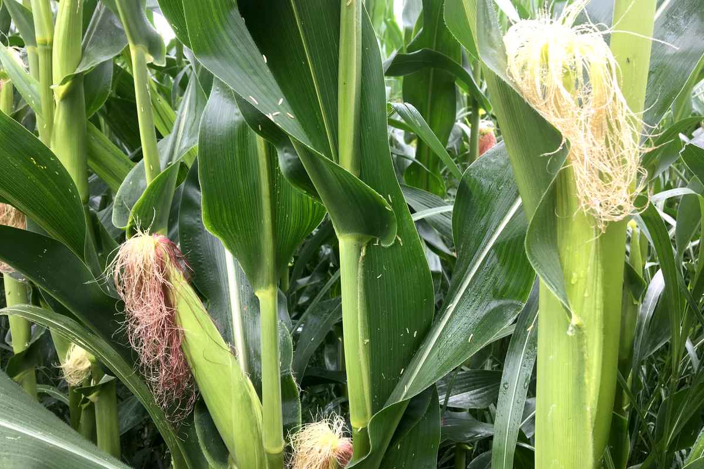
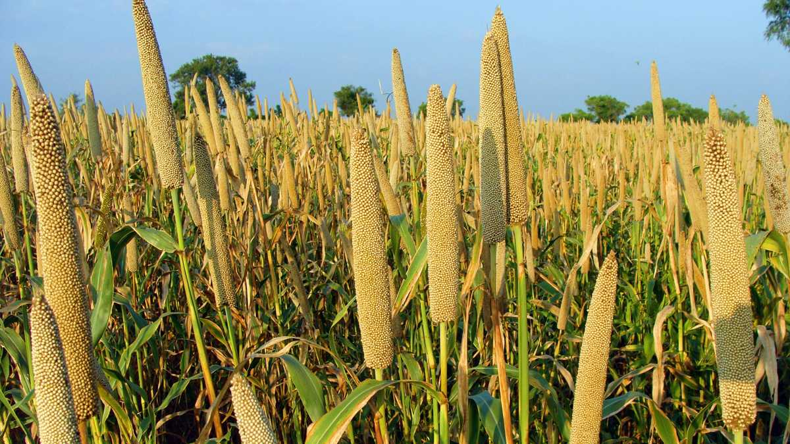
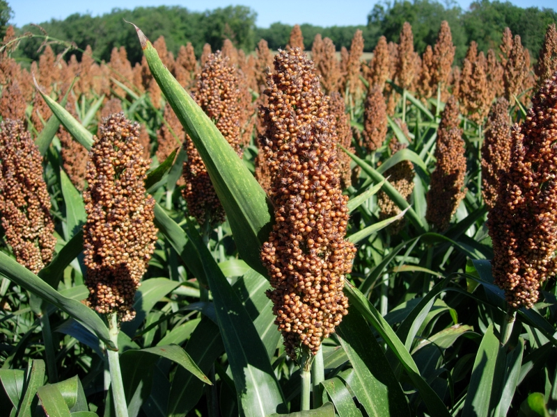

Production locale
Nous sélectionnons et cultivons des céréales de qualité, adaptées aux besoins du marché ivoirien.

GAK-AGROTECH
Des produits agricoles ivoiriens de qualité, du champ à la table.
Nous sélectionnons et cultivons des céréales de qualité, adaptées aux besoins du marché ivoirien.
Nous valorisons nos matières premières grâce à des procédés modernes qui améliorent leur qualité.
Nous assurons une mise à disposition rapide des produits pour les particuliers et les professionnels.



